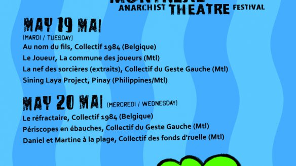
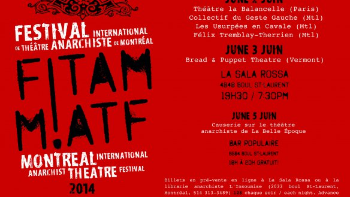

-
Communiqué de presse FITAM 2015
29 April 2015
Dixième festival International de Théâtre Anarchiste de Montréal, les 19 et 20 mai, 2015, avec la participation d’artistes en provenance de Belgique et de Montréal.
-
10ième Festival international de théâtre anarchiste de Montréal, les 18,19,20 mai 2015
08 July 2014
Le Festival international de théâtre anarchiste de Montréal (FITAM), seul festival au monde dédié au théâtre anarchiste, recherche des participants et participantes pour un événement théâtral les 18,19,20 mai 2015.
-
COMMUNIQUÉ DE PRESSE FITAM 2014
07 May 2014
“C’est incontestable. C’est à Montréal qu’a lieu le plus grand – et le seul – festival international de théâtre anarchiste au monde”. Étonnamment, comme le dit le journal local Voir, “sans aide ni soutien gouvernemental ou corporatif, il reste le petit festival sans prétention qui accomplit des petits miracles”.
 English
English